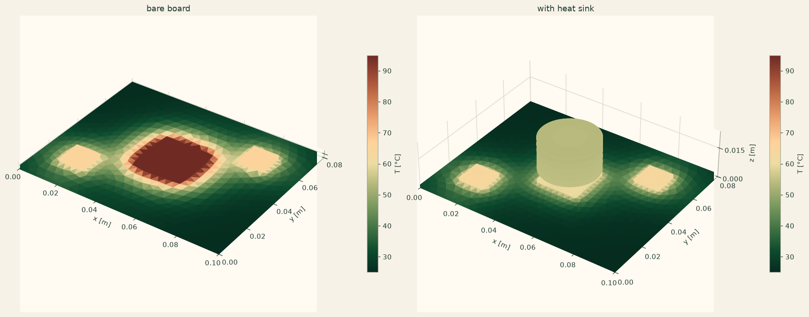
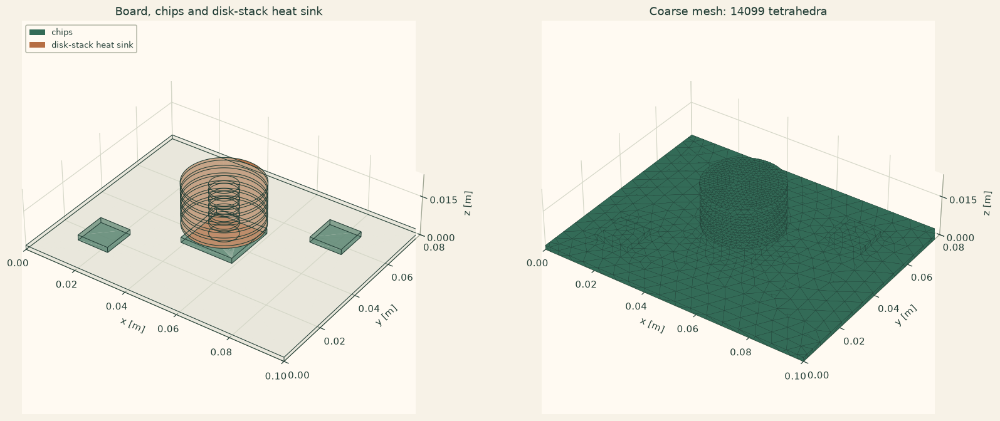

Docs › Examples › Circuit board with a disk-stack heat sink
Heat transfer · 3D
Circuit board with a disk-stack heat sink
A circuit board with three chip packages, cooled by natural convection, first bare and then with a disk-stack heat sink on its main chip.
Run locally with OneSimulation. The example downloads are free. Running them requires an activated runtime. Runtime Alpha 0.2.1a7 · CPython 3.13 on macOS (Apple Silicon), Ubuntu 22.04 (x86-64), and Windows x64. Installation and activation · View pilot plans. Scope of the reference checks.

What it computes
OneSimulation reads both designs and the chip and heat-sink regions from STEP files, meshes them with tetrahedra refined in the chips and the disks and solves steady 3D conduction with region-wise conductivity, chip heating and a convective film on all surfaces, on two meshes per design. The script that builds the STEP files comes with the notebook.
What it checks
The disk-stack heat sink lowers the main chip from 152.3 °C to 55.3 °C while the small chips stay near 64 to 66 °C; the chip temperatures change by at most 1.2 K between the two meshes, and 3.95 W of the 4 W leave through the surfaces on the finer meshes (energy balance within 1.2 %).
Geometry
The notebook starts at the import of the CAD files disk_stack_heat_sink_board.step, disk_stack_heat_sink_board_bare.step, disk_stack_heat_sink_board_chip_a.step, disk_stack_heat_sink_board_chip_b.step, disk_stack_heat_sink_board_chip_main.step, disk_stack_heat_sink_board_sink.step: STEP (AP242), readable by any CAD program, with the names of the faces that the boundary conditions use. Put them next to the notebook.

The geometry script
The script disk_stack_heat_sink_board_geometry.py builds the geometry with the CAD objects of OneSimulation and writes the files. Change a dimension there, run it, and run the notebook again.
"""Geometry of the OneSimulation example "Circuit board with a disk-stack heat sink".
Builds, with the CAD objects of OneSimulation, a circuit board (100 mm x 80 mm x 1.6 mm) carrying three
chip packages and a disk-stack heat sink (a post with six disks) on the largest chip. Two assemblies are
written: the board with its chips alone (disk_stack_heat_sink_board_bare.step) and with the heat sink
(disk_stack_heat_sink_board.step). Every chip and the heat sink also get a region file
disk_stack_heat_sink_board_<name>.step.
"""
from onesim.cad.d3 import Box, Cylinder, UnionFromObjects
board_t, chip_t = 0.0016, 0.002
board = Box(length=0.100, width=0.080, height=board_t)
chips = {
"chip_main": Box(
length=0.020, width=0.020, height=chip_t, origin=(0.040, 0.030, board_t)
),
"chip_a": Box(
length=0.012, width=0.012, height=chip_t, origin=(0.012, 0.012, board_t)
),
"chip_b": Box(
length=0.012, width=0.012, height=chip_t, origin=(0.074, 0.054, board_t)
),
}
top = board_t + chip_t
sink = UnionFromObjects(
objects=[
Cylinder(radius=0.005, length=0.020, origin=(0.050, 0.040, top)),
*[
Cylinder(
radius=0.014,
length=0.001,
origin=(0.050, 0.040, top + 0.004 + 0.003 * i),
)
for i in range(6)
],
]
)
UnionFromObjects(objects=[board, *chips.values()]).save(
"disk_stack_heat_sink_board_bare.step"
)
UnionFromObjects(objects=[board, *chips.values(), sink]).save(
"disk_stack_heat_sink_board.step"
)
for name, part in {**chips, "sink": sink}.items():
part.save(f"disk_stack_heat_sink_board_{name}.step")The notebook
The complete notebook, cell by cell. Run it to produce the figures and the comparison printout.
A typical preliminary board-level analysis: a circuit board (100 mm × 80 mm × 1.6 mm, glass-epoxy laminate) carries three chip packages, the main processor (20 mm × 20 mm, 3 W) and two smaller chips (12 mm × 12 mm, 0.5 W each). Air at 25 °C cools every surface by natural convection, \(h=10\) W/(m² K). Is the main chip too hot, and how much does a heat sink help? The heat sink is a stack of six aluminium disks (28 mm diameter, 1 mm thick, 2 mm apart) on a central post.
| part | \(k\) [W/(m K)] | power [W] | |---|---|---| | board (laminate) | 0.8 (averaged with its copper planes) | – | | chip packages | 20 | 3, 0.5, 0.5 | | heat sink (aluminium) | 200 | – |
The board with its chips comes from the CAD files disk_stack_heat_sink_board_bare.step and, with the heat sink, disk_stack_heat_sink_board.step; the chips and the heat sink have their region files disk_stack_heat_sink_board_<name>.step. The script disk_stack_heat_sink_board_geometry.py builds them with the CAD objects of OneSimulation.
Reference. No closed form exists for such a board. The checks are the energy balance (the 4 W must leave through the surfaces) and the change of the chip temperatures when the mesh is refined.
from dataclasses import replace
import numpy as np
from onesim.cad.d2 import Plane
from onesim.cad.exchange import load
from onesim.materials import IsotropicSolid
from onesim.meshing import LocalRefinement, TetrahedralMesher
from onesim.numerics import Numerics
from onesim.numerics.fem import FiniteElement, Lagrange
from onesim.numerics.linear import SparseDirect
from onesim.physics.heat_transfer import ConvectiveHeatFlux, HeatConduction
from onesim.simulation import Problem, Simulation, regionwise
from onesim.visualization import plots, theme
theme.set()Geometry and mesh
load returns both designs and the regions of the chips and the heat sink. The tetrahedra are 6 mm on the board, 3 mm in the chips and 1.2 mm in the heat sink; a second mesh divides all sizes by 1.4.
designs = {
"bare board": load("disk_stack_heat_sink_board_bare.step"),
"with heat sink": load("disk_stack_heat_sink_board.step"),
}
chips = {
name: load(f"disk_stack_heat_sink_board_{name}.step")
for name in ("chip_main", "chip_a", "chip_b")
}
sink = load("disk_stack_heat_sink_board_sink.step")
meshes = {
(design, level): TetrahedralMesher(
target_size=0.006 / level,
refinements=(
LocalRefinement(region=sink, target_size=0.0012 / level),
*(
LocalRefinement(region=chip, target_size=0.003 / level)
for chip in chips.values()
),
),
).generate(part)
for design, part in designs.items()
for level in (1, 1.4)
}
view = plots.Camera(elevation=35, azimuth=-55)
fig = plots.figure(1, 2, size=(15, 6))
board_top, chip_top = (
chips["chip_main"].bounding_box[0][2],
chips["chip_main"].bounding_box[1][2],
)
part = designs["with heat sink"]
plots.geometry(
part,
selection={
"chips": part.select(
faces=lambda face: board_top + 1e-9 < face.center[2] <= chip_top + 1e-9
),
"disk-stack heat sink": part.select(
faces=lambda face: face.center[2] > chip_top + 1e-9
),
},
labels=False,
camera=view,
title="Board, chips and disk-stack heat sink",
ax=fig[0],
)
plots.mesh(
meshes["with heat sink", 1],
groups=("all",),
legend=False,
camera=view,
title=f"Coarse mesh: {meshes['with heat sink', 1].cell_count} tetrahedra",
ax=fig[1],
)
plots.show()Model
Conductivity and heating are given region by region, with point tests from the CAD bounds of the chips and of the heat sink; the board laminate is the default. Each design is solved on both meshes with quadratic elements.
powers = {"chip_main": 3.0, "chip_a": 0.5, "chip_b": 0.5}
laminate = IsotropicSolid(
density=1900.0,
specific_heat_capacity=1200.0,
thermal_conductivity=0.8,
youngs_modulus=2.2e10,
poisson_ratio=0.15,
thermal_expansion_coefficient=1.4e-5,
)
inside = {
name: lambda p, low=np.array(chip.bounding_box[0]), high=np.array(
chip.bounding_box[1]
): np.all((p >= low - 1e-9) & (p <= high + 1e-9), axis=1)
for name, chip in chips.items()
}
(sx0, sy0, sz0), (sx1, sy1, _) = sink.bounding_box
in_sink = lambda p: (
np.hypot(p[:, 0] - (sx0 + sx1) / 2, p[:, 1] - (sy0 + sy1) / 2)
<= (sx1 - sx0) / 2 + 1e-9
) & (p[:, 2] >= sz0 - 1e-9)
material = replace(
laminate,
thermal_conductivity=regionwise(
((in_sink, 200.0), *((test, 20.0) for test in inside.values())),
default=0.8,
unit="W/m/K",
),
)
heating = regionwise(
tuple(
(inside[name], powers[name] / (chip.size[0] * chip.size[1] * chip.size[2]))
for name, chip in chips.items()
),
default=0.0,
unit="W/m^3",
)
fields = {}
for (design, level), mesh in meshes.items():
model = HeatConduction(
domain=designs[design].volume, material=material, heating=heating
)
problem = Problem(
name=design,
geometry=designs[design],
physics=(model,),
boundary_conditions=(
ConvectiveHeatFlux(
boundary=designs[design].boundaries.all,
physics=model,
heat_transfer_coefficient=10.0,
ambient_temperature=298.15,
),
),
)
fields[design, level] = (
Simulation(
problem=problem,
mesh=mesh,
numerics=Numerics(
spatial=FiniteElement(element=Lagrange(order=2)),
linear_solver=SparseDirect(),
),
)
.solve_stationary()
.field(model.temperature)
)Results
The temperature at the centre of the top face of each chip, and the heat leaving through all surfaces.
centres = {
name: [chip.center_of_mass[0], chip.center_of_mass[1], chip.bounding_box[1][2]]
for name, chip in chips.items()
}
print(
"design mesh main chip [°C] chip A [°C] chip B [°C] heat to the air [W]"
)
for (design, level), field in fields.items():
values = field.evaluate(list(centres.values())).ravel() - 273.15
print(
f"{design:16s} {'coarse' if level == 1 else 'fine':6s} {values[0]:16.2f} {values[1]:13.2f} {values[2]:13.2f} "
f"{field.boundary_flux(designs[design].boundaries.all):21.4f}"
)Figure
The surface temperature of both designs on the fine mesh, with the same colour scale.
fig = plots.figure(1, 2, size=(16, 6.5))
for panel, design in enumerate(designs):
plots.surface(
fields[design, 1.4],
component=lambda T, position: T - 273.15,
limits=(25, 95),
contours=15,
subdivisions=1,
camera=view,
label="T [°C]",
title=design,
ax=fig[panel],
)
plots.show()Going further
Add a copper plane under the board (one more region file with \(k=400\) W/(m K)), enlarge the disks in disk_stack_heat_sink_board_geometry.py, or replace the natural convection by a fan, \(h=40\) W/(m² K), and compare the main-chip temperature of all variants.